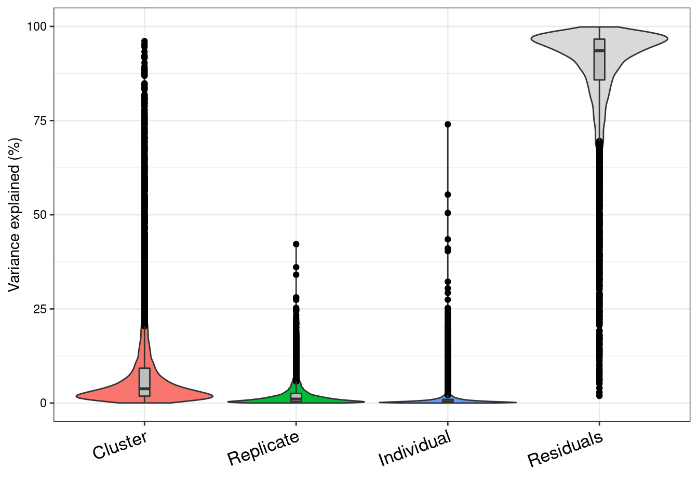

Last updated: 2021-07-05
Checks: 6 1
Knit directory: Embryoid_Body_Pilot_Workflowr/analysis/
This reproducible R Markdown analysis was created with workflowr (version 1.6.2). The Checks tab describes the reproducibility checks that were applied when the results were created. The Past versions tab lists the development history.
Great! Since the R Markdown file has been committed to the Git repository, you know the exact version of the code that produced these results.
Great job! The global environment was empty. Objects defined in the global environment can affect the analysis in your R Markdown file in unknown ways. For reproduciblity it's best to always run the code in an empty environment.
The command set.seed(20200804) was run prior to running the code in the R Markdown file. Setting a seed ensures that any results that rely on randomness, e.g. subsampling or permutations, are reproducible.
Great job! Recording the operating system, R version, and package versions is critical for reproducibility.
Nice! There were no cached chunks for this analysis, so you can be confident that you successfully produced the results during this run.
Using absolute paths to the files within your workflowr project makes it difficult for you and others to run your code on a different machine. Change the absolute path(s) below to the suggested relative path(s) to make your code more reproducible.
| absolute | relative |
|---|---|
| /project2/gilad/katie/Pilot_HumanEBs/Embryoid_Body_Pilot_Workflowr/output/SingleCell_VariancePartition_SCT_Res0.1_minPCT0.2.rds | ../output/SingleCell_VariancePartition_SCT_Res0.1_minPCT0.2.rds |
| /project2/gilad/katie/Pilot_HumanEBs/Embryoid_Body_Pilot_Workflowr/output/figs/Fig4_VarPartSingleCellRes.0.1.png | ../output/figs/Fig4_VarPartSingleCellRes.0.1.png |
| /project2/gilad/katie/Pilot_HumanEBs/Embryoid_Body_Pilot_Workflowr/output/VarPart.ByCluster.Res0.1.rds | ../output/VarPart.ByCluster.Res0.1.rds |
| /project2/gilad/katie/Pilot_HumanEBs/Embryoid_Body_Pilot_Workflowr/output/pdfs/VarPart.ByCluster.SCres.Plots.pdf | ../output/pdfs/VarPart.ByCluster.SCres.Plots.pdf |
Great! You are using Git for version control. Tracking code development and connecting the code version to the results is critical for reproducibility.
The results in this page were generated with repository version ee65585. See the Past versions tab to see a history of the changes made to the R Markdown and HTML files.
Note that you need to be careful to ensure that all relevant files for the analysis have been committed to Git prior to generating the results (you can use wflow_publish or wflow_git_commit). workflowr only checks the R Markdown file, but you know if there are other scripts or data files that it depends on. Below is the status of the Git repository when the results were generated:
Ignored files:
Ignored: .Rhistory
Ignored: .Rproj.user/
Ignored: analysis/.Rhistory
Ignored: analysis/figure/
Ignored: output/.Rhistory
Untracked files:
Untracked: GSE122380_raw_counts.txt.gz
Untracked: UTF1_plots.Rmd
Untracked: analysis/OLD/
Untracked: analysis/child/
Untracked: build_refint_scale.R
Untracked: build_refint_sct.R
Untracked: build_stuff.R
Untracked: build_varpart_sc.R
Untracked: code/.ipynb_checkpoints/
Untracked: code/CellRangerPreprocess.Rmd
Untracked: code/GEO_processed_data.Rmd
Untracked: code/PowerAnalysis_NoiseRatio.ipynb
Untracked: code/Untitled.ipynb
Untracked: code/Untitled1.ipynb
Untracked: data/HCL_Fig1_adata.h5ad
Untracked: data/HCL_Fig1_adata.h5seurat
Untracked: data/dge/
Untracked: data/dge_raw_data.tar.gz
Untracked: data/ref.expr.rda
Untracked: figure/
Untracked: output/CR_sampleQCrds/
Untracked: output/CaoEtAl.Obj.CellsOfAllClusters.ProteinCodingGenes.rds
Untracked: output/CaoEtAl.Obj.rds
Untracked: output/ClusterInfo_res0.1.csv
Untracked: output/DGELists/
Untracked: output/DownSampleVarPart.rds
Untracked: output/Frequency.MostCommonAnnotation.FiveNearestRefCells.csv
Untracked: output/GEOsubmissionProcessedFiles/
Untracked: output/GeneLists_by_minPCT/
Untracked: output/MostCommonAnnotation.FiveNearestRefCells.csv
Untracked: output/NearestReferenceCell.Cao.hESC.EuclideanDistanceinHarmonySpace.csv
Untracked: output/NearestReferenceCell.Cao.hESC.FrequencyofEachAnnotation.csv
Untracked: output/NearestReferenceCell.SCTregressRNAassay.Cao.hESC.EuclideanDistanceinHarmonySpace.csv
Untracked: output/NearestReferenceCell.SCTregressRNAassay.Cao.hESC.FrequencyofEachAnnotation.csv
Untracked: output/Pseudobulk_Limma_res0.1_OnevAllTopTables.csv
Untracked: output/Pseudobulk_Limma_res0.1_OnevAll_top10Upregby_adjP.csv
Untracked: output/Pseudobulk_Limma_res0.1_OnevAll_top10Upregby_logFC.csv
Untracked: output/Pseudobulk_Limma_res0.5_OnevAllTopTables.csv
Untracked: output/Pseudobulk_Limma_res0.8_OnevAllTopTables.csv
Untracked: output/Pseudobulk_Limma_res1_OnevAllTopTables.csv
Untracked: output/Pseudobulk_VarPart.ByCluster.Res0.1.rds
Untracked: output/ResidualVariances_fromDownSampAnalysis.csv
Untracked: output/SingleCell_VariancePartition_RNA_Res0.1_minPCT0.2.rds
Untracked: output/SingleCell_VariancePartition_Res0.1_minPCT0.2.rds
Untracked: output/SingleCell_VariancePartition_SCT_Res0.1_minPCT0.2.rds
Untracked: output/TopicModelling_k10_top10drivergenes.byBeta.csv
Untracked: output/TopicModelling_k6_top10drivergenes.byBeta.csv
Untracked: output/TopicModelling_k6_top15drivergenes.byZ.csv
Untracked: output/TranferredAnnotations_ReferenceInt_JustEarlyEcto.csv
Untracked: output/TranferredAnnotations_ReferenceInt_JustEndoderm.csv
Untracked: output/TranferredAnnotations_ReferenceInt_JustMeso.csv
Untracked: output/TranferredAnnotations_ReferenceInt_JustNeuralCrest.csv
Untracked: output/TranferredAnnotations_ReferenceInt_JustNeuron.csv
Untracked: output/TranferredAnnotations_ReferenceInt_JustPluripotent.csv
Untracked: output/VarPart.ByCluster.Res0.1.rds
Untracked: output/azimuth/
Untracked: output/downsamp_10800cells_10subreps_medianexplainedbyresiduals_varpart_PsB.rds
Untracked: output/downsamp_16200cells_10subreps_medianexplainedbyresiduals_varpart_PsB.rds
Untracked: output/downsamp_21600cells_10subreps_medianexplainedbyresiduals_varpart_PsB.rds
Untracked: output/downsamp_2700cells_10subreps_medianexplainedbyresiduals_varpart_PsB.rds
Untracked: output/downsamp_2700cells_10subreps_medianexplainedbyresiduals_varpart_scres.rds
Untracked: output/downsamp_5400cells_10subreps_medianexplainedbyresiduals_varpart_PsB.rds
Untracked: output/downsamp_7200cells_10subreps_medianexplainedbyresiduals_varpart_PsB.rds
Untracked: output/fasttopics/
Untracked: output/figs/
Untracked: output/merge.Cao.SCTwRegressOrigIdent.rds
Untracked: output/merge.all.SCTwRegressOrigIdent.Harmony.rds
Untracked: output/merged.SCT.counts.matrix.rds
Untracked: output/merged.raw.counts.matrix.rds
Untracked: output/mergedObjects/
Untracked: output/pdfs/
Untracked: output/sampleQCrds/
Untracked: output/splitgpm_gsea_results/
Untracked: slurm-12005914.out
Untracked: slurm-12005923.out
Unstaged changes:
Deleted: analysis/IntegrateAnalysis.afterFilter.HarmonyBatch.Rmd
Deleted: analysis/IntegrateAnalysis.afterFilter.HarmonyBatchSampleIDindividual.Rmd
Deleted: analysis/IntegrateAnalysis.afterFilter.NOHARMONYjustmerge.Rmd
Deleted: analysis/IntegrateAnalysis.afterFilter.SCTregressBatchIndividual.Rmd
Deleted: analysis/IntegrateAnalysis.afterFilter.SCTregressBatchIndividualHarmonyBatchindividual.Rmd
Deleted: analysis/RunscHCL_HarmonyBatchInd.Rmd
Modified: analysis/index.Rmd
Note that any generated files, e.g. HTML, png, CSS, etc., are not included in this status report because it is ok for generated content to have uncommitted changes.
These are the previous versions of the repository in which changes were made to the R Markdown (analysis/VarPartPlots_res0.1_SCT.Rmd) and HTML (docs/VarPartPlots_res0.1_SCT.html) files. If you've configured a remote Git repository (see ?wflow_git_remote), click on the hyperlinks in the table below to view the files as they were in that past version.
| File | Version | Author | Date | Message |
|---|---|---|---|---|
| Rmd | ee65585 | KLRhodes | 2021-07-05 | wflow_publish("analysis/VarPartPlots_res0.1_SCT.Rmd") |
| Rmd | 285dd16 | KLRhodes | 2021-07-05 | wflow_git_commit(c("analysis/SingleCell_VariancePartitionByCluster_Harmony.Batchindividual_ClusterRes0.1_minPCT0.2.Rmd", |
library(variancePartition)Loading required package: ggplot2Loading required package: limmaLoading required package: foreachLoading required package: scalesLoading required package: BiobaseLoading required package: BiocGenericsLoading required package: parallel
Attaching package: 'BiocGenerics'The following objects are masked from 'package:parallel':
clusterApply, clusterApplyLB, clusterCall, clusterEvalQ,
clusterExport, clusterMap, parApply, parCapply, parLapply,
parLapplyLB, parRapply, parSapply, parSapplyLBThe following object is masked from 'package:limma':
plotMAThe following objects are masked from 'package:stats':
IQR, mad, sd, var, xtabsThe following objects are masked from 'package:base':
Filter, Find, Map, Position, Reduce, anyDuplicated, append,
as.data.frame, basename, cbind, colnames, dirname, do.call,
duplicated, eval, evalq, get, grep, grepl, intersect, is.unsorted,
lapply, mapply, match, mget, order, paste, pmax, pmax.int, pmin,
pmin.int, rank, rbind, rownames, sapply, setdiff, sort, table,
tapply, union, unique, unsplit, which, which.max, which.minWelcome to Bioconductor
Vignettes contain introductory material; view with
'browseVignettes()'. To cite Bioconductor, see
'citation("Biobase")', and for packages 'citation("pkgname")'.
Attaching package: 'variancePartition'The following object is masked from 'package:limma':
classifyTestsFvarpart<- readRDS("/project2/gilad/katie/Pilot_HumanEBs/Embryoid_Body_Pilot_Workflowr/output/SingleCell_VariancePartition_SCT_Res0.1_minPCT0.2.rds")vp<- sortCols(varpart)plotPercentBars(vp[1:10,])colnames(vp)<- c("Cluster", "Replicate", "Individual", "Residuals")
G<- plotVarPart(vp)
G
png(file= "/project2/gilad/katie/Pilot_HumanEBs/Embryoid_Body_Pilot_Workflowr/output/figs/Fig4_VarPartSingleCellRes.0.1.png", width=8, height=5, units= "in", res=1080)
G
dev.off()#do the genes most effected by individual match what I did in limma?
vp<- vp[order(vp$Individual, decreasing=T),]
head(vp, 30) Cluster Replicate Individual Residuals
EIF1AY 0.017179074 0.0201635369 0.7400354 0.2226220
DDX3Y 0.015241230 0.0394909986 0.5534403 0.3918274
USP9Y 0.030763674 0.0461448311 0.5046933 0.4183982
TYW3 0.026875179 0.0024270382 0.4348307 0.5358671
BEX3 0.075978797 0.0076296320 0.4105769 0.5058146
NDUFB11 0.021293031 0.0113526582 0.4034176 0.5639367
HIST1H1A 0.079550441 0.0476246651 0.3221543 0.5506706
HESX1 0.131045825 0.0282384687 0.3046679 0.5360478
PMEL 0.111753841 0.0117396317 0.2926008 0.5839057
IAH1 0.023797091 0.0041248269 0.2745594 0.6975187
TCEAL4 0.027975274 0.0114853312 0.2524410 0.7080984
MT1F 0.340521072 0.0291377620 0.2506635 0.3796776
TIMM17B 0.014399707 0.0169316047 0.2435549 0.7251138
CHCHD2 0.007111615 0.0024823218 0.2375171 0.7528890
MT-CO1 0.074241583 0.0695424993 0.2328243 0.6233916
GPR143 0.106052993 0.0281560616 0.2278210 0.6379699
PDHA1 0.074651885 0.0116003840 0.2270857 0.6866620
TCEAL5 0.024222672 0.0099600090 0.2234590 0.7423583
USP9X 0.093029122 0.1021567471 0.2158343 0.5889798
UXT 0.019959766 0.0241737193 0.2136661 0.7422004
TCEAL7 0.078318652 0.0002146677 0.2135347 0.7079320
BEX2 0.131248052 0.0093431646 0.2079642 0.6514446
TCEAL8 0.020584809 0.0575414556 0.2064651 0.7154087
EDNRB 0.129067801 0.0211735023 0.2057443 0.6440144
TCEAL9 0.161864688 0.0246674622 0.2003147 0.6131531
TIMP1 0.312132488 0.0027570009 0.1993260 0.4857845
AASS 0.194906768 0.0549847318 0.1990449 0.5510636
MAGEH1 0.075076508 0.0274232980 0.1973866 0.7001136
SMS 0.153756403 0.0748190831 0.1953155 0.5761090
FZD5 0.176126765 0.0089992715 0.1930138 0.6218601#do the genes most effected by batch match what I did in limma?
vp<- vp[order(vp$Replicate, decreasing=T),]
head(vp, 30) Cluster Replicate Individual Residuals
GIMAP8 0.360376220 0.4218973 0.0021894809 0.2155370
EEF1A1 0.043836198 0.3606096 0.0112124487 0.5843417
GIMAP1 0.489351939 0.3408792 0.0015224285 0.1682465
PPP1CB 0.020738221 0.2805619 0.0059202063 0.6927796
EIF3E 0.049771632 0.2801152 0.0383999920 0.6317132
KLHL6 0.483873526 0.2740501 0.0014882706 0.2405881
MT-ND1 0.066763486 0.2528231 0.1728168463 0.5075966
MYZAP 0.373913854 0.2495968 0.0015462969 0.3749430
OIT3 0.596744814 0.2471812 0.0012308036 0.1548432
MORF4L1 0.032661957 0.2457469 0.0020551649 0.7195360
MRPL42 0.056118836 0.2440401 0.0012990993 0.6985420
ADGRF5 0.650996569 0.2335237 0.0010136889 0.1144660
SCRT2 0.403213098 0.2256859 0.0007248324 0.3703762
ST18 0.421479228 0.2202838 0.0004949852 0.3577420
CAPZA1 0.008856970 0.2159039 0.0040780361 0.7711611
PSMA4 0.012767658 0.2144311 0.0098085331 0.7629928
TMED2 0.031739799 0.2124085 0.0020349108 0.7538168
RSL24D1 0.032166490 0.2112529 0.0004608102 0.7561198
SKIL 0.196438818 0.2099147 0.0036798866 0.5899666
CD163L1 0.395100043 0.2091684 0.0047735006 0.3909581
CHRNA1 0.521622484 0.2084190 0.0031347986 0.2668237
STARD8 0.328068949 0.2082135 0.0037620819 0.4599554
ITGA10 0.603951784 0.2025822 0.0009514104 0.1925146
NSG2 0.439203154 0.2017754 0.0003053412 0.3587162
MORF4L2 0.023526618 0.2000242 0.1814664754 0.5949827
SRP9 0.070302898 0.1987936 0.0825299589 0.6483735
TLR4 0.440699416 0.1939968 0.0023843038 0.3629195
TMEM167A 0.034668240 0.1902355 0.0153045963 0.7597916
PPP1CC 0.064483524 0.1902061 0.0026784432 0.7426319
ATP5MG 0.009518363 0.1892405 0.0032775246 0.7979636summary(vp$Individual) Min. 1st Qu. Median Mean 3rd Qu. Max.
0.000000 0.001460 0.003936 0.010267 0.009719 0.740035 summary(vp$Replicate) Min. 1st Qu. Median Mean 3rd Qu. Max.
0.00000 0.00381 0.01053 0.02102 0.02552 0.42190 #genes for which individual contributes more to variance than batch?
vp.indgreaterthanbatch<- vp[vp$Individual>vp$Replicate,]
dim(vp.indgreaterthanbatch) #vp greater than batch for 5266 out of 11356[1] 3098 4head(vp.indgreaterthanbatch, 20) Cluster Replicate Individual Residuals
ATP6AP2 0.004918418 0.11830660 0.18082884 0.6959461
PRKY 0.078775919 0.11153476 0.12191813 0.6877712
TNFAIP6 0.051354787 0.10320712 0.14028757 0.7051505
USP9X 0.093029122 0.10215675 0.21583431 0.5889798
USP44 0.365469207 0.09761112 0.11848474 0.4184349
LIN28A 0.198065758 0.08656516 0.10239114 0.6129779
SMC1A 0.047301943 0.08433810 0.09059742 0.7777625
MT1M 0.105977798 0.08024246 0.10238324 0.7113965
SLC38A2 0.024121018 0.07941953 0.08424119 0.8122183
CD70 0.039476345 0.07872565 0.08749644 0.7943016
TOMM20 0.064513971 0.07556030 0.11936872 0.7405570
NR6A1 0.043893033 0.07510756 0.16180868 0.7191907
SMS 0.153756403 0.07481908 0.19531552 0.5761090
CCK 0.034740304 0.07411645 0.08105861 0.8100846
TMEM132C 0.067781901 0.07309619 0.09534396 0.7637779
ARHGAP8 0.072135472 0.07219112 0.08150912 0.7741643
TSTD1 0.270485439 0.07188931 0.07694232 0.5806829
MT-CYB 0.047934904 0.07176506 0.08498571 0.7953143
TSPAN6 0.075833396 0.07154123 0.10542160 0.7472038
RAB4A 0.029308323 0.07104102 0.10424411 0.7954065Plots for Variance Partition by cluster (Res 0.1, SCT assay)
varpart.byclust<- readRDS("/project2/gilad/katie/Pilot_HumanEBs/Embryoid_Body_Pilot_Workflowr/output/VarPart.ByCluster.Res0.1.rds")vp.bar.list<- NULL
for (i in 1:length(varpart.byclust)){
v<- varpart.byclust[[i]]
vp<- sortCols(v)
vp.bar.list[[i]]<-plotVarPart(vp, main= paste0("Percent variance explained by batch and individual in cluster", (i-1)))
}
vp.bar.list[[1]]
[[2]]
[[3]]
[[4]]
[[5]]
[[6]]
[[7]]pdf(file = "/project2/gilad/katie/Pilot_HumanEBs/Embryoid_Body_Pilot_Workflowr/output/pdfs/VarPart.ByCluster.SCres.Plots.pdf")
vp.bar.list[[1]]
[[2]]
[[3]]
[[4]]
[[5]]
[[6]]
[[7]]dev.off()png
2 sessionInfo()R version 3.6.1 (2019-07-05)
Platform: x86_64-pc-linux-gnu (64-bit)
Running under: Scientific Linux 7.4 (Nitrogen)
Matrix products: default
BLAS/LAPACK: /software/openblas-0.2.19-el7-x86_64/lib/libopenblas_haswellp-r0.2.19.so
locale:
[1] C
attached base packages:
[1] parallel stats graphics grDevices utils datasets methods
[8] base
other attached packages:
[1] variancePartition_1.16.1 Biobase_2.46.0 BiocGenerics_0.32.0
[4] scales_1.1.1 foreach_1.5.0 limma_3.42.2
[7] ggplot2_3.3.3 workflowr_1.6.2
loaded via a namespace (and not attached):
[1] Rcpp_1.0.6 lattice_0.20-38 prettyunits_1.1.1
[4] gtools_3.8.2 rprojroot_2.0.2 digest_0.6.27
[7] plyr_1.8.6 R6_2.5.0 evaluate_0.14
[10] highr_0.8 pillar_1.4.7 gplots_3.0.4
[13] rlang_0.4.10 progress_1.2.2 minqa_1.2.4
[16] gdata_2.18.0 whisker_0.4 nloptr_1.2.2.2
[19] Matrix_1.2-18 rmarkdown_2.3 labeling_0.4.2
[22] splines_3.6.1 BiocParallel_1.20.1 lme4_1.1-23
[25] statmod_1.4.34 stringr_1.4.0 munsell_0.5.0
[28] compiler_3.6.1 httpuv_1.5.4 xfun_0.16
[31] pkgconfig_2.0.3 htmltools_0.5.0 tidyselect_1.1.0
[34] tibble_3.0.4 codetools_0.2-16 crayon_1.3.4
[37] dplyr_1.0.2 withr_2.4.2 later_1.1.0.1
[40] MASS_7.3-51.4 bitops_1.0-6 grid_3.6.1
[43] nlme_3.1-140 gtable_0.3.0 lifecycle_0.2.0
[46] git2r_0.26.1 magrittr_2.0.1 KernSmooth_2.23-15
[49] stringi_1.5.3 farver_2.0.3 reshape2_1.4.4
[52] fs_1.4.2 promises_1.1.1 doParallel_1.0.15
[55] colorRamps_2.3 ellipsis_0.3.1 generics_0.1.0
[58] vctrs_0.3.6 boot_1.3-23 iterators_1.0.12
[61] tools_3.6.1 glue_1.4.2 purrr_0.3.4
[64] hms_0.5.3 pbkrtest_0.4-8.6 yaml_2.2.1
[67] colorspace_2.0-0 caTools_1.18.0 knitr_1.29
sessionInfo()R version 3.6.1 (2019-07-05)
Platform: x86_64-pc-linux-gnu (64-bit)
Running under: Scientific Linux 7.4 (Nitrogen)
Matrix products: default
BLAS/LAPACK: /software/openblas-0.2.19-el7-x86_64/lib/libopenblas_haswellp-r0.2.19.so
locale:
[1] C
attached base packages:
[1] parallel stats graphics grDevices utils datasets methods
[8] base
other attached packages:
[1] variancePartition_1.16.1 Biobase_2.46.0 BiocGenerics_0.32.0
[4] scales_1.1.1 foreach_1.5.0 limma_3.42.2
[7] ggplot2_3.3.3 workflowr_1.6.2
loaded via a namespace (and not attached):
[1] Rcpp_1.0.6 lattice_0.20-38 prettyunits_1.1.1
[4] gtools_3.8.2 rprojroot_2.0.2 digest_0.6.27
[7] plyr_1.8.6 R6_2.5.0 evaluate_0.14
[10] highr_0.8 pillar_1.4.7 gplots_3.0.4
[13] rlang_0.4.10 progress_1.2.2 minqa_1.2.4
[16] gdata_2.18.0 whisker_0.4 nloptr_1.2.2.2
[19] Matrix_1.2-18 rmarkdown_2.3 labeling_0.4.2
[22] splines_3.6.1 BiocParallel_1.20.1 lme4_1.1-23
[25] statmod_1.4.34 stringr_1.4.0 munsell_0.5.0
[28] compiler_3.6.1 httpuv_1.5.4 xfun_0.16
[31] pkgconfig_2.0.3 htmltools_0.5.0 tidyselect_1.1.0
[34] tibble_3.0.4 codetools_0.2-16 crayon_1.3.4
[37] dplyr_1.0.2 withr_2.4.2 later_1.1.0.1
[40] MASS_7.3-51.4 bitops_1.0-6 grid_3.6.1
[43] nlme_3.1-140 gtable_0.3.0 lifecycle_0.2.0
[46] git2r_0.26.1 magrittr_2.0.1 KernSmooth_2.23-15
[49] stringi_1.5.3 farver_2.0.3 reshape2_1.4.4
[52] fs_1.4.2 promises_1.1.1 doParallel_1.0.15
[55] colorRamps_2.3 ellipsis_0.3.1 generics_0.1.0
[58] vctrs_0.3.6 boot_1.3-23 iterators_1.0.12
[61] tools_3.6.1 glue_1.4.2 purrr_0.3.4
[64] hms_0.5.3 pbkrtest_0.4-8.6 yaml_2.2.1
[67] colorspace_2.0-0 caTools_1.18.0 knitr_1.29